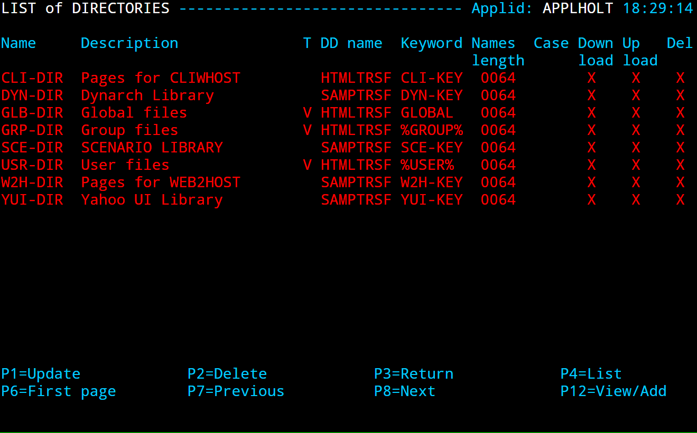

How to activate and use the FTP File Transfer function of Virtel
Introduction
VIRTEL Web Access v4.59 introduces support for FTP file transfer. This function consists of the following elements:
One or more templates that Virtel uses to generate FTP parameters. These can be configured by the Virtel administrator.
A Virtel scenario that generates the FTP parameter file, when the function is called via a button on the toolbar of from an option on the Virtel administration menu.
A Windows desktop script that executes the file transfer, using the FTP parameters that have been generated by Virtel.
How does it work?
Virtel runs in a browser and as such does not provide direct FTP connection to the mainframe. The Virtel FTP function centralizes the FTP file transfer parameters, where they can be configured by the Virtel Administrator. When an end-user requests for an FTP transfer to be initiated, an FTP parameter file is downloaded to the browser default download directory. The file transfer can then be executed by calling a batch script on the user-s desktop, that will use the parameter file as an input.
Pre-requisites
The user workstation must be able to run Microsoft’s ftp.exe program.
The user must be authorized to run batch (BAT) and Power shell scripts
The Virtel Entry point(s) must be defined to load scenarios from the SCE-DIR directory. This is normally the default.
A directory to keep the ancillary programs should be created on the users PC. This could be something like c:virtelftp. See Appendix A for me details on the ancillary post processing programs.
Installing and configuring the FTP function
Download and apply the Virtel 4.59 UPDT5799 update from the Virtel FTP website. This should apply they latest maintenance to Virtel which includes the FTP feature. Stop Virtel. Add the following Virtel transactions: -
//INIARBO EXEC PGM=VIRCONF,PARM=LOAD
//STEPLIB DD DISP=SHR,DSN=SPTHOLT.VIRT459.LOADLIB
//SYSPRINT DD SYSOUT=*
//VIRARBO DD DISP=SHR,DSN=SPTHOLT.VIRT459.ARBO
//SYSIN DD *
TRANSACT ID=W2H-04E, -
NAME=FTPPARM, -
DESC='FTPPARM ', -
APPL=$NONE$, -
TYPE=2, -
TERMINAL=DELOC, -
STARTUP=1, -
SECURITY=0, -
TIOASTA=&/S, -
EXITSTA=FTPPARM
TRANSACT ID=CLI-04E, -
NAME=FTPPARM, -
DESC='FTPPARM ', -
APPL=$NONE$, -
TYPE=2, -
TERMINAL=CLLOC, -
STARTUP=1, -
SECURITY=0, -
TIOASTA=&/S, -
EXITSTA=FTPPARM
The new transactions will provide the support for the FTP feature. The external/internal is FTPPARM
 FTP transaction definition for FTP file transfer
FTP transaction definition for FTP file transfer
The FTPPARM scenario, FTPPARM.390, should be loaded up into the SCE directory. It is a part of the UPDT5799 update.
Defining the FTP templates
The FTP function provides default templates for Upload and Download FTP requests. These can be customized to your site specifications and then re-uploaded to the W2H-DIR directory.
Example: sendipnw.txt. (Send new file to target with IP address)
<!--VIRTEL start="{{{" end="}}}" -->OPEN {{{CURRENT-VALUE-OF "IPDSN"}}}
USER {{{CURRENT-VALUE-OF "USERFTP"}}}
? <==== Optional Password Trigger!
{{{CURRENT-VALUE-OF "TYPFTP"}}}
quote site blksize={{{CURRENT-VALUE-OF "BSZFTP"}}} lrecl={{{CURRENT-VALUE-OF "LRLFTP"}}} recfm={{{CURRENT-VALUE-OF "RFMFTP"}}} {{{CURRENT-VALUE-OF "SPCFTP"}}} pri={{{CURRENT-VALUE-OF "PRIFTP"}}} sec={{{CURRENT-VALUE-OF "SECFTP"}}}
PUT {{{CURRENT-VALUE-OF "LOCALFILEFTP"}}} {{{CURRENT-VALUE-OF "REMOTEFILEFTP"}}}
QUIT
The third line of the template defines the optional user password character. If it is set to “?”, then the user will be prompted for a password when running the FTP PSVirtelFtp.ps1 script on the workstation.
Template Variables
The following variables can be used in the FTP templates:
{{{CURRENT-VALUE-OF "USERFTP"}}} = Screen field <<Userid--
{{{CURRENT-VALUE-OF "TYPFTP"}}} = Screen field --text or Binary--, value --ASCII-- or --TYPE I--
{{{CURRENT-VALUE-OF "TYPCHS"}}} = Screen field --Charset--
{{{CURRENT-VALUE-OF "REMOTEFILEFTP"}}} = Grouped Screen field of -Path:-- and --File-:-- of Section --Host File--
{{{CURRENT-VALUE-OF "LOCALFILEFTP"}}} = Grouped Screen field -Path:-- and --File-:-- of Section --PC File--
{{{CURRENT-VALUE-OF "IPDSN"}}} = Screen field --IUP/DNS--
{{{CURRENT-VALUE-OF "BSZFTP"}}} = Screen field --Blksize-
{{{CURRENT-VALUE-OF "LRLFTP"}}} = Screen field --Lrecl-
{{{CURRENT-VALUE-OF "RFMFTP"}}} = Screen field --Recfm-
{{{CURRENT-VALUE-OF "SPCFTP"}}} = Screen field --Space-
{{{CURRENT-VALUE-OF "PRIFTP"}}} = Screen field --Pri-
{{{CURRENT-VALUE-OF "SECFTP"}}} = Screen field --Sec-
Defining the FTP templates for the action listbox.
Modify the supplied JavaScript file -dataftplist.js- source to populate the -Action- list box with your personal templates.
// $Id: dataftplist.js ???? 2019-10-15 09:01:46 lepi $
var FTPLIST = new Array();
var alink = new Array();
alink["ftpvalue"] = "send";
alink["host"] = "T";
alink["ftpmsg"] = "Send ip 192.168.92.161";
FTPLIST[0] = alink;
var alink = new Array();
alink["ftpvalue"] = "sendip";
alink["host"] = "T";
alink["ftpmsg"] = "Send ip Target";
FTPLIST[1] = alink;
Activate the Toolbar icons for file transfer
A new icon for FTP parameter generation can be displayed on the VIRTEL Web Access toolbar via a setting in the user parameter settings dialog. When the settings Option “Show the toggle button for VirtelFtp” is checked, a blue FTP icon will appear, as shown below:
 VIRTEL Web Access toolbar for FTP file transfer
VIRTEL Web Access toolbar for FTP file transfer
Installing the bat files, shortcut and ancillary programs.
Within the UPDT5799 update there is a zip file called ftpbat.zip. Unzip this to a directory on your workstation, for example c:VirtelFtp. These four files are used to initiate the FTP file transfer and maintain the FTP profiles in local browser storage. See Appendix A for details.
Set up a shortcut on your desktop
For ease of operation set up a shortcut on your directory, pointing to the .bat file in c:virtelftp. Once the FTP parameters have been built by Virtel FTP, clicking this shortcut will invoke the FTP file transfer.

Example of the desktop shortcut
How to use the Virtel FTP function
Sending a file
To send a file from your workstation to a target FTP site, click the FTP icon on the Virtel toolbar. The -VIRTEL FTP- dialog will open:
 VIRTEL FTP dialog (part 1)
VIRTEL FTP dialog (part 1)
Select –Send ip Target– in the action list box.
Specify the Username to be used for the FTP connection.-
In Section -PC File-
Specify the Local Path if necessary.
Specify the PC file name. You can also specify the pathname here or -
Drag And Drop a file onto the -Drag files from your directory path to here!– zone. This will populate the filename field.
Specify the Charset to be used for the FTP transfer. The default is Windows CP-1252
In Section -Host File-
Specify the Path (equal TSO dataset name or TSO PDS), surrounded by quotes if necessary. Dataset names without quotes will be prefixed by your TSO prefix (usually your userid).
Specify the File (equal TSO dataset name).
In sub-Section -FTP Options- in the -Host File- section
Choose either -Text- or -Binary-. -Text- translates the file from EBCDIC to ASCII and inserts carriage return line feed sequences (x-0D0A-) at the end of each record. -Binary- performs no translation.
In sub-Section -Host- in -Host File-
Select the target host type (TSO/UNIX/JES2) associated with the “Transfer Type” action. This will modify the actions to the selected type.
Finally click -Build- to generate the FTP parameter file.
When the Generate Parameter is complete, the browser’s VIRTEL FTP Save Parameter dialog appears:

VIRTEL FTP receive dialog (part 2)
Click Save. The Save As dialog will open to allow you to specify the name and location of the destination file on your workstation:

VIRTEL FTP receive dialog (part 3)
Now select the destination file and click Save. If the file already exists, you will be prompted for permission to overwrite it. The Download Complete dialog appears when the file has been saved. Once the file has downloaded, run the PSVirtelFtp.bat procedure. This should be setup as a shortcut on your desktop.
If the password was defined by a”?” in the template, the following dialog will appear.

After entering the password, the transfer will be executed, and the following console log should be displayed.

The last line of the execution report in the DOS windows provides information on the execution status.
Selecting a PC Codepage for FTP file transfer
Users can select a PC Codepage for FTP file transfer. Possible values are: -
Windows (CP-1252)-: CP-1252 ASCII-EBCDIC translation table.
MS-DOS (CP-850)-: CP-850 ASCII-EBCDIC translation table.
This depends on the value of the COUNTRY parameter specified in the VIRTCT. If this value is “FR”, “DE” or “BE”, system will use corresponding table FR-850, DE-850 or BE-850. If the specified country value is different, by default the BE-850 table will be used to support CECP 500 international EBCDIC.
Saving and reusing FTP file transfer parameters
Users who frequently use the same FTP file transfers can save the parameters for later reuse. To save a FTP file transfer, enter the dataset name and the type of transfer, and click the Save button: -

VIRTEL FTP Receive dialog (saved transfers)
The user can then choose a name for the saved transfer and click “OK” to save the parameters. At the next transfer, the user clicks the name of the saved transfer to retrieve the parameters, then clicks “Generate Parameter” to start the generate.

VIRTEL FTP Saving the FTP file transfer parameters
Users can save transfer parameters for -Generate Parameter-. The parameters are saved in browser local storage. The number of sets of parameters which can be saved is limited only by the amount of local storage available.
Showing / Hiding FTP File Transfer
The administrator may wish to prevent users from accessing features like FTP File Transfer. This example shows how to hide the toolbar option by setting a parameter in the w2hparm.

/*
* set the value of the -Show toggle button for VirtelFtp-.
*/
w2hparm.showftp = true;
Example w2hparm.js for hiding FTP File Transfer.
If the default value is used, users can show this function for their own usage by checking “Show the toggle button for VirtelFtp” in the Display tab of the settings panel.
Appendix A
The FTP feature interfaces with the client FTP program provided by Windows. The following four files must be installed into a Virtel FTP folder on your workstation. For example c:Virtelftp. The four files are available within the UPDT5799 update package.
Ancillary files used are used by Virtel FTP and may be customized by a user for their own site requirements.
Downloadftp.bat
Test Batch FTP script.
:: $Id: downloadftp.bat 5228 2019-12-03 13:57:05Z riou $
::Script Batch de transfert ftp.exe avec fichier FTPPARAM.TXT
@echo off
set dateLog=%date:~6,4%%date:~3,2%%date:~0,2%
set h=%TIME:~0,2%
set m=%TIME:~3,2%
set s=%TIME:~6,2%
set timeLog=%h%_%m%_%s%
REM Launch FTP and pass it the script
ftp -n -s:%HOMEDRIVE%%HomePath%\Downloads\FTPPARAM.txt >%HOMEDRIVE%%HomePath%\Downloads\Log_Ftp_%dateLog%_%timeLog%.log
REM Delete params
rem del %HOMEDRIVE%%HomePath%\Downloads\FTPPARAM.txt
VirtelFtp.ps1 - Ancillary Power Shell script.
VirtelFtp.vbs - Ancillary Visual Basic program.
PSVirtelFtp.bat - Initial Bat file which triggers the FTP process.
Should be defined as a short-cut on the desktop. Will process the FTPPARM.TXT file that has been created in the users -Download- directory. This file contains all the details of the FTP request built from the Virtel FTP screens. The file is used by the ancillary programs to initiate and perform the FTP operation. PSVirtelFtp.bat kicks off a power shell script VirtelFtp.ps1.
echo off
move %USERPROFILE%\Downloads\ftpparam.txt c:\virtel\ftp
start /W /B powershell -file VirtelFtp.ps1 %1
rem del %USERPROFILE%\Downloads\ftpparam.txt
Appendix B
Debugging
Power Shell authority
Users may find that the following error message appears when invoking the Power Shell Script:-

This can be corrected by issuing the Windows command: Set-ExecutionPolicy Bypass
Appendix C
Advanced Features
The UPDT5799 package ships with an electron directory which contains a Node JS electron program that can monitor the uses Download directory. When a FTPPARAM.TXT file arrives from the -browser- the batch file PSVirtelNodeFtp.bat is automatically invoked to perform the FTP transfer. This functionality removes the need for the user to manually trigger the FTP processes through a desktop shortcut.
To install this feature you must be familiar with Node JS, NPM and Electron web tools. This knowledge is outside the remit of this newsletter.
Installation
Copy the files in the electron directory to c:VirtelFtp.
Issue the command NPM INSTALL to created the Node JS/Electron environment.
Start the FTP Watcher program with the command -Node Main-.
The watcher program will now start. Whenever a new -FTPPARAM.TXT- hits the download directory the FTP process will begin. Here is an example.
c:\virtel\ftp>node main
Starting FTP Watcher on C:\Users\Holt\Downloads\
Processing FTP Request....
VIRU099I - Batch command executed for C:\Users\Holt\Downloads\FTPPARAM.TXT
c:\virtel\ftp>echo off
Child exited with code 0